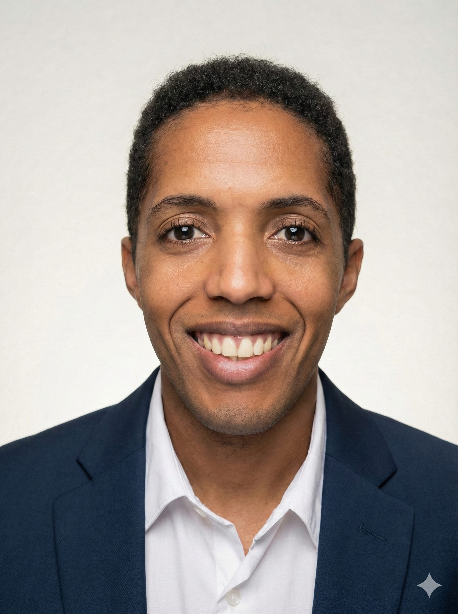

Construire des ponts entre les idées et la réalité.
Ingénieur de formation, je résous des problèmes humains et techniques en alliant rigueur financière et puissance créative du code.

Mon Odyssée Académique
Bac S (Physique-Chimie)
C'est ici que tout commence. Une curiosité scientifique insatiable et le désir de comprendre les mécanismes du monde à travers la physique.
Économie & Gestion
Apprendre à lire entre les chiffres. Comprendre les flux, les marchés et les comportements humains derrière l'économie mondiale.
Ingénierie des Risques
Spécialisation dans la modélisation financière. Apprendre à prévoir l'imprévisible et à structurer des données complexes pour la finance.
Nouveaux Défis
Fraîchement diplômé, je suis désormais ouvert à de nouveaux défis professionnels. Je souhaite mettre mes compétences analytiques et techniques au service de projets à fort impact.
Expériences Professionnelles
Risques Climatiques (Forsides)
Modélisation d'impact financier via Python et la bibliothèque CLIMADA lors de mon stage de fin d'études M2.
Consulter l'étude →Contrôle de Gestion (SG)
Assistant contrôle et gestion à la Société Générale de Madagascar : pilotage des KPI et reporting financier.
Projets Personnels
Le Grimoire Parental
Application mobile interactive (Flutter) dédiée à la psychologie de la petite enfance.
Détails techniques →Automatisation Zoom
Système intelligent de gestion automatique des inscriptions et rappels via n8n.
Détails techniques →Serveur & Déploiement
Configuration d'un serveur Linux (VPS) avec Nginx et Git pour l'hébergement de plateformes.
Détails techniques →Paiement Sécurisé Stripe
Architecture Node.js intégrant l'API Stripe pour des transactions financières sécurisées.
Détails techniques →